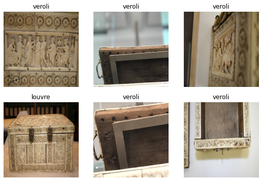
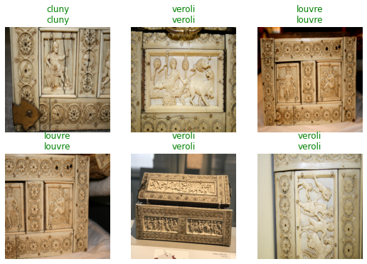
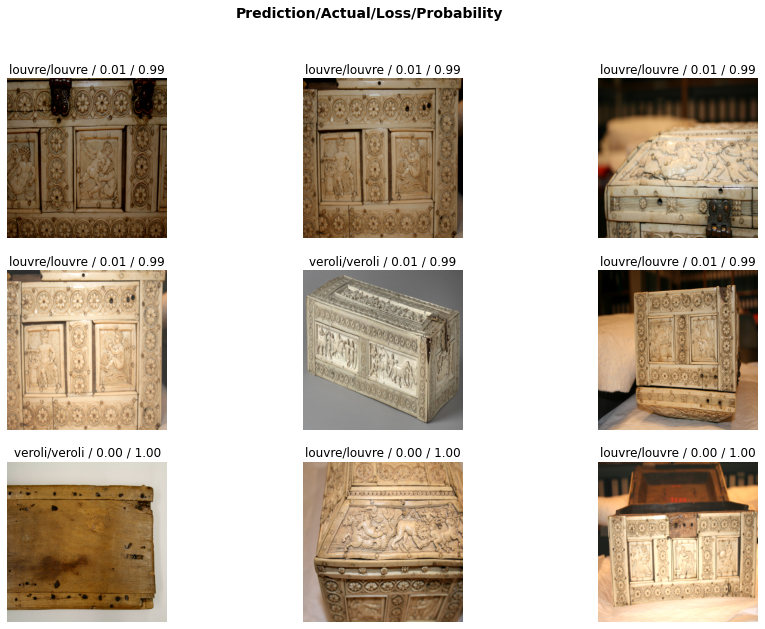

Journal of Stylometry of Byzantine Ivory Boxes
Contents
Journal of Stylometry of Byzantine Ivory Boxes¶
Date: 2022-Feb-18th¶
Used Dataset: Cluny, Louvre Box, Veroli Box¶
1. Importing Prerequisites, Data Cleaning, and Augmentation¶
!pip install -U albumentations
Requirement already satisfied: albumentations in c:\programdata\anaconda3\lib\site-packages (1.1.0)
Requirement already satisfied: numpy>=1.11.1 in c:\programdata\anaconda3\lib\site-packages (from albumentations) (1.19.3)
Requirement already satisfied: opencv-python-headless>=4.1.1 in c:\programdata\anaconda3\lib\site-packages (from albumentations) (4.5.5.62)
Requirement already satisfied: qudida>=0.0.4 in c:\programdata\anaconda3\lib\site-packages (from albumentations) (0.0.4)
Requirement already satisfied: scikit-image>=0.16.1 in c:\programdata\anaconda3\lib\site-packages (from albumentations) (0.18.1)
Requirement already satisfied: PyYAML in c:\programdata\anaconda3\lib\site-packages (from albumentations) (5.4.1)
Requirement already satisfied: scipy in c:\programdata\anaconda3\lib\site-packages (from albumentations) (1.6.2)
Requirement already satisfied: typing-extensions in c:\programdata\anaconda3\lib\site-packages (from qudida>=0.0.4->albumentations) (3.10.0.2)
Requirement already satisfied: scikit-learn>=0.19.1 in c:\programdata\anaconda3\lib\site-packages (from qudida>=0.0.4->albumentations) (0.24.1)
Requirement already satisfied: matplotlib!=3.0.0,>=2.0.0 in c:\programdata\anaconda3\lib\site-packages (from scikit-image>=0.16.1->albumentations) (3.3.4)
Requirement already satisfied: networkx>=2.0 in c:\programdata\anaconda3\lib\site-packages (from scikit-image>=0.16.1->albumentations) (2.5)
Requirement already satisfied: pillow!=7.1.0,!=7.1.1,>=4.3.0 in c:\programdata\anaconda3\lib\site-packages (from scikit-image>=0.16.1->albumentations) (8.2.0)
Requirement already satisfied: imageio>=2.3.0 in c:\programdata\anaconda3\lib\site-packages (from scikit-image>=0.16.1->albumentations) (2.9.0)
Requirement already satisfied: tifffile>=2019.7.26 in c:\programdata\anaconda3\lib\site-packages (from scikit-image>=0.16.1->albumentations) (2021.4.8)
Requirement already satisfied: PyWavelets>=1.1.1 in c:\programdata\anaconda3\lib\site-packages (from scikit-image>=0.16.1->albumentations) (1.1.1)
Requirement already satisfied: pyparsing!=2.0.4,!=2.1.2,!=2.1.6,>=2.0.3 in c:\programdata\anaconda3\lib\site-packages (from matplotlib!=3.0.0,>=2.0.0->scikit-image>=0.16.1->albumentations) (2.4.7)
Requirement already satisfied: kiwisolver>=1.0.1 in c:\programdata\anaconda3\lib\site-packages (from matplotlib!=3.0.0,>=2.0.0->scikit-image>=0.16.1->albumentations) (1.3.1)
Requirement already satisfied: cycler>=0.10 in c:\programdata\anaconda3\lib\site-packages (from matplotlib!=3.0.0,>=2.0.0->scikit-image>=0.16.1->albumentations) (0.10.0)
Requirement already satisfied: python-dateutil>=2.1 in c:\programdata\anaconda3\lib\site-packages (from matplotlib!=3.0.0,>=2.0.0->scikit-image>=0.16.1->albumentations) (2.8.1)
Requirement already satisfied: six in c:\programdata\anaconda3\lib\site-packages (from cycler>=0.10->matplotlib!=3.0.0,>=2.0.0->scikit-image>=0.16.1->albumentations) (1.15.0)
Requirement already satisfied: decorator>=4.3.0 in c:\programdata\anaconda3\lib\site-packages (from networkx>=2.0->scikit-image>=0.16.1->albumentations) (5.0.6)
Requirement already satisfied: joblib>=0.11 in c:\programdata\anaconda3\lib\site-packages (from scikit-learn>=0.19.1->qudida>=0.0.4->albumentations) (1.0.1)
Requirement already satisfied: threadpoolctl>=2.0.0 in c:\programdata\anaconda3\lib\site-packages (from scikit-learn>=0.19.1->qudida>=0.0.4->albumentations) (2.1.0)
#prerequisites
from fastai.vision.all import *
from fastai.data.external import *
from PIL import Image
import glob
import albumentations as A
import numpy as np
p = "dataset"
veroli = "Veroli Box"
louvre = "Louvre Box"
cluny = "Cluny"
v = "dataset/veroli/"
l = "dataset/louvre/"
c = "dataset/cluny/"
SIZE = 480
batch_size = 6
# Image Augmentation Functions
transform = A.Compose([
A.HorizontalFlip(p=0.5),
A.RandomBrightnessContrast(p=0.2),
A.HueSaturationValue(),
])
# Testing out a image with method resize
# saving data into Veroli List
veroli_list = []
for filename in glob.glob(veroli+"/*.JPG"):
img = Image.open(filename)
resized = img.resize((SIZE,SIZE))
resized = np.array(resized)
transformed_1 = transform(image=resized)['image']
transformed_2 = transform(image=resized)['image']
transformed_3 = transform(image=resized)['image']
veroli_list.append(resized)
veroli_list.append(transformed_1)
veroli_list.append(transformed_2)
veroli_list.append(transformed_3)
# saving data into Louvre List
louvre_list = []
for filename in glob.glob(louvre+"/*.JPG"):
img = Image.open(filename)
resized = img.resize((SIZE,SIZE))
resized = np.array(resized)
transformed_1 = transform(image=resized)['image']
transformed_2 = transform(image=resized)['image']
transformed_3 = transform(image=resized)['image']
louvre_list.append(resized)
louvre_list.append(transformed_1)
louvre_list.append(transformed_2)
louvre_list.append(transformed_3)
# saving data into Cluny list
cluny_list = []
for filename in glob.glob(cluny+"/*.JPG"):
img = Image.open(filename)
resized = img.resize((SIZE,SIZE))
resized = np.array(resized)
transformed_1 = transform(image=resized)['image']
transformed_2 = transform(image=resized)['image']
transformed_3 = transform(image=resized)['image']
cluny_list.append(resized)
cluny_list.append(transformed_1)
cluny_list.append(transformed_2)
cluny_list.append(transformed_3)
len(veroli_list), len(louvre_list), len(cluny_list)
---------------------------------------------------------------------------
KeyboardInterrupt Traceback (most recent call last)
<ipython-input-5-9ee74603bde7> in <module>
5 for filename in glob.glob(veroli+"/*.JPG"):
6 img = Image.open(filename)
----> 7 resized = img.resize((SIZE,SIZE))
8 resized = np.array(resized)
9 transformed_1 = transform(image=resized)['image']
C:\ProgramData\Anaconda3\lib\site-packages\PIL\Image.py in resize(self, size, resample, box, reducing_gap)
1941 )
1942
-> 1943 return self._new(self.im.resize(size, resample, box))
1944
1945 def reduce(self, factor, box=None):
KeyboardInterrupt:
cluny_list[-2]
array([[[125, 106, 73],
[133, 112, 73],
[135, 114, 75],
...,
[ 57, 50, 37],
[ 50, 46, 32],
[ 52, 44, 28]],
[[125, 104, 72],
[132, 109, 77],
[139, 114, 78],
...,
[ 96, 86, 75],
[ 88, 81, 69],
[ 85, 79, 67]],
[[128, 108, 77],
[134, 116, 83],
[139, 119, 83],
...,
[116, 113, 95],
[117, 108, 93],
[113, 105, 88]],
...,
[[107, 94, 65],
[103, 89, 58],
[ 74, 57, 30],
...,
[ 82, 72, 58],
[ 81, 74, 56],
[ 86, 76, 57]],
[[105, 91, 61],
[ 91, 72, 43],
[ 55, 36, 17],
...,
[ 86, 77, 60],
[ 85, 75, 58],
[ 91, 77, 59]],
[[100, 83, 50],
[ 68, 48, 25],
[ 50, 31, 13],
...,
[ 88, 77, 59],
[ 87, 74, 57],
[ 91, 76, 63]]], dtype=uint8)
# saving images into dataset folders
i = 0
for x in veroli_list:
im = Image.fromarray(x)
im.save(v+str(i)+".png")
i += 1
i = 0
for x in louvre_list:
im = Image.fromarray(x)
im.save(l+str(i)+".png")
i += 1
i = 0
for x in cluny_list:
im = Image.fromarray(x)
im.save(c+str(i)+".png")
i += 1
2. Stylometry¶
dls = ImageDataLoaders.from_folder(p, valid_pct=0.2, bs = batch_size)
dls.valid_ds.items[:10]
Due to IPython and Windows limitation, python multiprocessing isn't available now.
So `number_workers` is changed to 0 to avoid getting stuck
[Path('dataset/louvre/73.png'),
Path('dataset/veroli/1213.png'),
Path('dataset/veroli/193.png'),
Path('dataset/louvre/299.png'),
Path('dataset/veroli/911.png'),
Path('dataset/veroli/1056.png'),
Path('dataset/veroli/694.png'),
Path('dataset/louvre/321.png'),
Path('dataset/veroli/1224.png'),
Path('dataset/veroli/1287.png')]
dls.train_ds.items[:10]
[Path('dataset/veroli/1087.png'),
Path('dataset/veroli/302.png'),
Path('dataset/veroli/37.png'),
Path('dataset/louvre/401.png'),
Path('dataset/veroli/1065.png'),
Path('dataset/veroli/101.png'),
Path('dataset/veroli/1365.png'),
Path('dataset/veroli/431.png'),
Path('dataset/veroli/650.png'),
Path('dataset/veroli/1353.png')]
len(dls.train_ds.items)
1626
len(dls.valid_ds.items)
406
dls.show_batch()

learn = cnn_learner(dls, resnet34, metrics=error_rate)
# at this point, we probabaly need to clear out memory
import torch
torch.cuda.empty_cache()
import gc
gc.collect()
27319
torch.cuda.get_device_name(0)
'NVIDIA GeForce RTX 3080'
torch.cuda.memory_allocated(0)
147570176
# at this point, we probabaly need to clear out memory
import torch
torch.cuda.empty_cache()
import gc
gc.collect()
learn.lr_find()
SuggestedLRs(valley=0.0030199517495930195)
learn.fine_tune(4,3e-3)
| epoch | train_loss | valid_loss | error_rate | time |
|---|---|---|---|---|
| 0 | 0.298809 | 0.004719 | 0.000000 | 00:31 |
| epoch | train_loss | valid_loss | error_rate | time |
|---|---|---|---|---|
| 0 | 0.360149 | 0.037785 | 0.004926 | 00:37 |
| 1 | 0.158707 | 0.009759 | 0.002463 | 00:36 |
| 2 | 0.067731 | 0.001988 | 0.000000 | 00:36 |
| 3 | 0.036575 | 0.000278 | 0.000000 | 00:36 |
learn.show_results()

interp = Interpretation.from_learner(learn)
interp.plot_top_losses(9, figsize=(15,10))

learn.predict("Veroli Box/IMG_0450.jpg")
('veroli', tensor(2), tensor([1.4311e-08, 2.1357e-06, 1.0000e+00]))
learn.predict("Louvre Box/IMG_0086.JPG")
('louvre', tensor(1), tensor([3.2297e-06, 6.8470e-01, 3.1530e-01]))
learn.predict("Cluny/IMG_0282.JPG")
('veroli', tensor(2), tensor([2.2630e-06, 5.9557e-04, 9.9940e-01]))
learn.predict("Cluny/IMG_0263.JPG")
('veroli', tensor(2), tensor([2.1314e-06, 1.3208e-04, 9.9987e-01]))